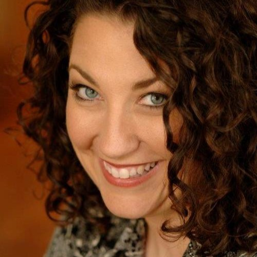

Advisory Board
Carla Hanson
Soprano and Instructor in Music Voice at Luther College
Carla Thelen Hanson is garnering attention for exciting and vocally thrilling performances of opera’s leading heroines throughout the country. Of her debut as Cio-Cio San in Puccini’s Madama Butterfly, the InForum declared, “the singer’s star is shining bright.”
Her debut as Desdemona in Verdi’s Otello at the Utah Festival Opera earned praise from the Salt Lake City Tribune for her vocal range, exquisite control, emotional depth, tenderness, vulnerability, and indomitable strength. Of her New York City Opera debut as Puccini’s Tosca, The New York Times noted that she was by turns fiery and vulnerable, while The New Yorker praised her strongly felt “Vissi d’arte.” Her performance of Tosca at Utah Festival Opera was also proclaimed outstanding by the Deseret News.
Her performance in Fidelio was praised by the InForum for a voice of great power and beauty. She received equal acclaim for portrayals of Maddalena de Coigny in Andrea Chénier for Mobile Opera and the title roles of Ariadne auf Naxos and Norma with Union Avenue Opera. For Seattle Opera’s 2009 Ring Cycles, she covered the three soprano Valkyries in Die Walküre.
On the concert stage, Ms. Hanson performs with noted symphony orchestras across the country. Her repertoire includes Barber’s Hermit Songs, Beethoven’s Ninth Symphony, Mass in C and Missa Solemnis, Handel’s Messiah and Ode for the Birthday of Queen Anne, Harbison’s Mirabai Songs, Libby Larsen’s Try Me, Good King, Mozart’s Exsultate, jubilate, Orff’s Carmina Burana, Rutter’s Feel the Spirit, Strauss’s Vier letzte Lieder, Verdi’s Requiem, Vivaldi’s Gloria and motets, and Wagner’s Wesendonck Lieder.
Her projects include Rosalinda in Johann Strauss II’s Die Fledermaus with Nashville Opera, a German art song recital series throughout the Midwest, and Chanson d’amour, a recording of songs of love from around the world with her longtime collaborator Ainhoa Urkijo.